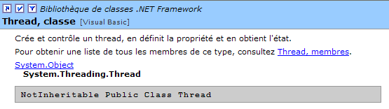
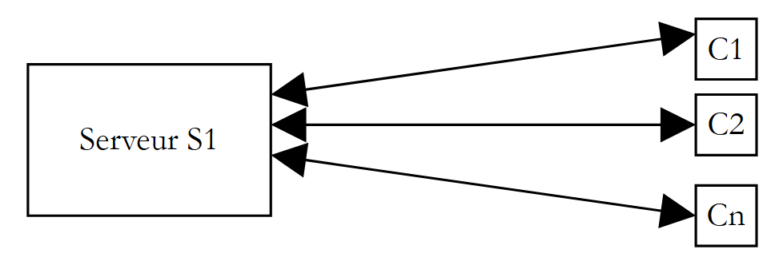

8. Les threads d'exécution
8.1. Introduction
Lorsqu'on lance une application, elle s'exécute dans un flux d'exécution appelé un thread. La classe .NET modélisant un thread est la classe System.Threading.Thread et a la définition suivante :

Nous n'utiliserons que certaines des propriétés et méthodes de cette classe :
donne le thread actuellement en cours d'exécution | |
nom du thread | |
indique si le thread est actif(true) ou non (false) | |
lance l'exécution d'un thread | |
arrête définitivement l'exécution d'un thread | |
arrête l'exécution d'un thread pendant n millisecondes | |
suspend temporairement l'exécution d'un thread | |
reprend l'excéution d'un thread suspendu | |
opération bloquante - attend la fin du thread pour passer à l'instruction suivante |
Regardons une première application mettant en évidence l'existence d'un thread principal d'exécution, celui dans lequel s'exécute la fonction Main d'une classe :
' utilisation de threads
Imports System
Imports System.Threading
Public Module thread1
Public Sub Main()
' init thread courant
Dim main As Thread = Thread.CurrentThread
' affichage
Console.Out.WriteLine(("Thread courant : " + main.Name))
' on change le nom
main.Name = "main"
' vérification
Console.Out.WriteLine(("Thread courant : " + main.Name))
' boucle infinie
While True
' affichage
Console.Out.WriteLine((main.Name + " : " + DateTime.Now.ToString("hh:mm:ss")))
' arrêt temporaire
Thread.Sleep(1000)
End While
End Sub
End Module
Les résultats écran :
dos>thread1
Thread courant :
Thread courant : main
main : 06:13:55
main : 06:13:56
main : 06:13:57
main : 06:13:58
main : 06:13:59
L'exemple précédent illustre les points suivants :
- la fonction Main s'exécute bien dans un thread
- on a accès aux caractéristiques de ce thread par Thread.CurrentThread
- le rôle de la méthode Sleep. Ici le thread exécutant Main se met en sommeil régulièrement pendant 1 seconde entre deux affichages.
8.2. Création de threads d'exécution
Il est possible d'avoir des applications où des morceaux de code s'exécutent de façon "simultanée" dans différents threads d'exécution. Lorsqu'on dit que des threads s'exécutent de façon simultanée, on commet souvent un abus de langage. Si la machine n'a qu'un processeur comme c'est encore souvent le cas, les threads se partagent ce processeur : ils en disposent, chacun leur tour, pendant un court instant (quelques millisecondes). C'est ce qui donne l'illusion du parallélisme d'exécution. La portion de temps accordée à un thread dépend de divers facteurs dont sa priorité qui a une valeur par défaut mais qui peut être fixée également par programmation. Lorsqu'un thread dispose du processeur, il l'utilise normalement pendant tout le temps qui lui a été accordé. Cependant, il peut le libérer avant terme :
- en se mettant en attente d'un événement (wait, join, suspend)
- en se mettant en sommeil pendant un temps déterminé (sleep)
- Un thread T est d'abord créé par son constructeur
ThreadStart est de type delegate et définit le prototype d'une fonction sans paramètres :
Une construction classique est la suivante :
La fonction run passée en paramètres sera exécutée au lancement du Thread.
- L'exécution du thread T est lancé par T.Start() : la fonction [run] passée au constructeur de T va alors être exécutée par le thread T. Le programme qui exécute l'instruction T.start() n'attend pas la fin de la tâche T : il passe aussitôt à l'instruction qui suit. On a alors deux tâches qui s'exécutent en parallèle. Elles doivent souvent pouvoir communiquer entre elles pour savoir où en est le travail commun à réaliser. C'est le problème de synchronisation des threads.
- Une fois lancé, le thread s'exécute de façon autonome. Il s'arrêtera lorsque la fonction start qu'il exécute aura fini son travail.
- On peut envoyer certains signaux à la tâche T :
- T.Suspend() lui dit de s'arrêter momentanément
- T.Resume() lui dit de reprendre son travail
- T.Abort() lui dit de s'arrêter définitivement
- On peut aussi attendre la fin de son exécution par T.join(). On a là une instruction bloquante : le programme qui l'exécute est bloqué jusqu'à ce que la tâche T ait terminé son travail. C'est un moyen de synchronisation.
Examinons le programme suivant :
' options
Option Strict On
Option Explicit On
' espaces de noms
Imports System
Imports System.Threading
Module thread2
Public Sub Main()
' init Thread courant
Dim main As Thread = Thread.CurrentThread
' on fixe un nom au Thread
main.Name = "main"
' création de threads d'exécution
Dim tâches(4) As Thread
Dim i As Integer
For i = 0 To tâches.Length - 1
' on crée le thread i
tâches(i) = New Thread(New ThreadStart(AddressOf affiche))
' on fixe le nom du thread
tâches(i).Name = "tache_" & i
' on lance l'exécution du thread i
tâches(i).Start()
Next i
' fin de main
Console.Out.WriteLine(("fin du thread " + main.Name))
End Sub
Public Sub affiche()
' affichage début d'exécution
Console.Out.WriteLine(("Début d'exécution de la méthode affiche dans le Thread " + Thread.CurrentThread.Name + " : " + DateTime.Now.ToString("hh:mm:ss")))
' mise en sommeil pendant 1 s
Thread.Sleep(1000)
' affichage fin d'exécution
Console.Out.WriteLine(("Fin d'exécution de la méthode affiche dans le Thread " + Thread.CurrentThread.Name + " : " + DateTime.Now.ToString("hh:mm:ss")))
End Sub
End Module
Le thread principal, celui qui exécute la fonction Main, crée 5 autres threads chargés d'exécuter la méthode statique affiche. Les résultats sont les suivants :
dos>thread2
fin du thread main
Début d'exécution de la méthode affiche dans le Thread tache_0 : 05:27:53
Début d'exécution de la méthode affiche dans le Thread tache_1 : 05:27:53
Début d'exécution de la méthode affiche dans le Thread tache_2 : 05:27:53
Début d'exécution de la méthode affiche dans le Thread tache_3 : 05:27:53
Début d'exécution de la méthode affiche dans le Thread tache_4 : 05:27:53
Fin d'exécution de la méthode affiche dans le Thread tache_0 : 05:27:54
Fin d'exécution de la méthode affiche dans le Thread tache_1 : 05:27:54
Fin d'exécution de la méthode affiche dans le Thread tache_2 : 05:27:54
Fin d'exécution de la méthode affiche dans le Thread tache_3 : 05:27:54
Fin d'exécution de la méthode affiche dans le Thread tache_4 : 05:27:54
Ces résultats sont très instructifs :
- on voit tout d'abord que le lancement de l'exécution d'un thread n'est pas bloquante. La méthode Main a lancé l'exécution de 5 threads en parallèle et a terminé son exécution avant eux. L'opération
lance l'exécution du thread tâches[i] mais ceci fait, l'exécution se poursuit immédiatement avec l'instruction qui suit sans attendre la fin d'exécution du thread.
- tous les threads créés doivent exécuter la méthode affiche. L'ordre d'exécution est imprévisible. Même si dans l'exemple, l'ordre d'exécution semble suivre l'ordre des demandes d'exécution, on ne peut en conclure de généralités. Le système d'exploitation a ici 6 threads et un processeur. Il va distribuer le processeur à ces 6 threads selon des règles qui lui sont propres.
- on voit dans les résultats une conséquence de la méthode Sleep. dans l'exemple, c'est le thread 0 qui exécute le premier la méthode affiche. Le message de début d'exécution est affiché puis il exécute la méthode Sleep qui le suspend pendant 1 seconde. Il perd alors le processeur qui devient ainsi disponible pour un autre thread. L'exemple montre que c'est le thread 1 qui va l'obtenir. Le thread 1 va suivre le même parcours ainsi que les autres threads. Lorsque la seconde de sommeil du thread 0 va être terminée, son exécution peut reprendre. Le système lui donne le processeur et il peut terminer l'exécution de la méthode affiche.
Modifions notre programme pour le terminer la méthode Main par les instructions :
L'exécution du nouveau programme donne :
Les threads créés par la fonction Main ne sont pas exécutés. C'est l'instruction
qui fait cela : elle supprime tous les threads de l'application et non simplement le thread Main. La solution à ce problème est que la méthode Main attende la fin d'exécution des threads qu'elle a créés avant de se terminer elle-même. Cela peut se faire avec la méthode Join de la classe Thread :
' on attend la fin d'exécution de tous les threads
For i = 0 To tâches.Length - 1
' attente de la fin d'exécution du thread i
tâches(i).Join()
Next i 'for
' fin de main
Console.Out.WriteLine(("fin du thread " + main.Name))
Environment.Exit(0)
On obtient alors les résultats suivants :
Début d'exécution de la méthode affiche dans le Thread tache_1 : 05:34:48
Début d'exécution de la méthode affiche dans le Thread tache_2 : 05:34:48
Début d'exécution de la méthode affiche dans le Thread tache_3 : 05:34:48
Début d'exécution de la méthode affiche dans le Thread tache_4 : 05:34:48
Début d'exécution de la méthode affiche dans le Thread tache_0 : 05:34:48
Fin d'exécution de la méthode affiche dans le Thread tache_2 : 05:34:50
Fin d'exécution de la méthode affiche dans le Thread tache_1 : 05:34:50
Fin d'exécution de la méthode affiche dans le Thread tache_3 : 05:34:50
Fin d'exécution de la méthode affiche dans le Thread tache_0 : 05:34:50
Fin d'exécution de la méthode affiche dans le Thread tache_4 : 05:34:50
fin du thread main
8.3. Intérêt des threads
Maintenant que nous avons mis en évidence l'existence d'un thread par défaut, celui qui exécute la méthode Main, et que nous savons comment en créer d'autres, arrêtons-nous sur l'intérêt pour nous des threads et sur la raison pour laquelle nous les présentons ici. Il y a un type d'applications qui se prêtent bien à l'utilisation des threads, ce sont les applications client-serveur de l'internet. Dans une telle application, un serveur situé sur une machine S1 répond aux demandes de clients situés sur des machines distantes C1, C2, ..., Cn.
 |
Nous utilisons tous les jours des applications de l'internet correspondant à ce schéma : services Web, messagerie électronique, consultation de forums, transfert de fichiers... Dans le schéma ci-dessus, le serveur S1 doit servir les clients Ci de façon simultanée. Si nous prenons l'exemple d'un serveur FTP (File Transfer Protocol) qui délivre des fichiers à ses clients, nous savons qu'un transfert de fichier peut prendre parfois plusieurs heures. Il est bien sûr hors de question qu'un client monopolise tout seul le serveur une telle durée. Ce qui est fait habituellement, c'est que le serveur crée autant de threads d'exécution qu'il y a de clients. Chaque thread est alors chargé de s'occuper d'un client particulier. Le processeur étant partagé cycliquement entre tous les threads actifs de la machine, le serveur passe alors un peu de temps avec chaque client assurant ainsi la simultanéité du service.
 |
8.4. Accès à des ressources partagées
Dans l'exemple client-serveur évoqué ci-dessus, chaque thread sert un client de façon largement indépendante. Néanmoins, les threads peuvent être amenés à coopérer pour rendre le service demandé à leur client notamment pour l'accès à des ressources partagées. Le schéma ci-dessus fait penser aux guichets d'une grande administration, une poste par exemple où à chaque guichet un agent sert un client. Supposons que de temps en temps ces agents soient amenés à faire des photocopies de documents amenés par leurs clients et qu'il n'y ait qu'une photocopieuse. Deux agents ne peuvent utiliser la photocopieuse en même temps. Si l'agent i trouve la photocopieuse utilisée par l'agent j, il devra attendre. On appelle cette situation, l'accès à une ressource partagée et en informatique elle est assez délicate à gérer. Prenons l'exemple suivant :
- une application va générer n threads, n étant passé en paramètre
- la ressource partagée est un compteur qui devra être incrémenté par chaque thread généré
- à la fin de l'application, la valeur du compteur est affiché. On devrait donc trouver n.
Le programme est le suivant :
' options
Option Explicit On
Option Strict On
' utilisation de threads
Imports System
Imports System.Threading
Public Class thread3
' variables de classe
Private Shared cptrThreads As Integer = 0
Public Overloads Shared Sub Main(ByVal args() As [String])
' mode d'emploi
Const syntaxe As String = "pg nbThreads"
Const nbMaxThreads As Integer = 100
' vérification nbre d'arguments
If args.Length <> 1 Then
' erreur
Console.Error.WriteLine(syntaxe)
' arrêt
Environment.Exit(1)
End If
' vérification qualité de l'argument
Dim nbThreads As Integer = 0
Try
nbThreads = Integer.Parse(args(0))
If nbThreads < 1 Or nbThreads > nbMaxThreads Then
Throw New Exception
End If
Catch
' erreur
Console.Error.WriteLine("Nombre de threads incorrect (entre 1 et " & nbMaxThreads & ")")
' fin
Environment.Exit(2)
End Try
' création et génération des threads
Dim threads(nbThreads - 1) As Thread
Dim i As Integer
For i = 0 To nbThreads - 1
' création
threads(i) = New Thread(New ThreadStart(AddressOf incrémente))
' nommage
threads(i).Name = "tache_" & i
' lancement
threads(i).Start()
Next i
' attente de la fin des threads
For i = 0 To nbThreads - 1
threads(i).Join()
Next i ' affichage compteur
Console.Out.WriteLine(("Nombre de threads générés : " & cptrThreads))
End Sub
Public Shared Sub incrémente()
' augmente le compteur de threads
' lecture compteur
Dim valeur As Integer = cptrThreads
' suivi
Console.Out.WriteLine(("A " + DateTime.Now.ToString("hh:mm:ss") & ", le thread " & Thread.CurrentThread.Name & " a lu la valeur du compteur : " & cptrThreads))
' attente
Thread.Sleep(1000)
' incrémentation compteur
cptrThreads = valeur + 1
' suivi
Console.Out.WriteLine(("A " & DateTime.Now.ToString("hh:mm:ss") & ", le thread " & Thread.CurrentThread.Name & " a écrit la valeur du compteur : " & cptrThreads))
End Sub
End Class
Nous ne nous attarderons pas sur la partie génération de threads déjà étudiée. Intéressons-nous plutôt à la méthode incrémente, utilisée par chaque thread pour incrémenter le compteur statique cptrThreads.
- le compteur est lu
- le thread s'arrête 1 s. Il perd donc le processeur
- le compteur est incrémenté
L'étape 2 n'est là que pour forcer le thread à perdre le processeur. Celui-ci va être donné à un autre thread. Dans la pratique, rien n'assure qu'un thread ne sera pas interrompu entre le moment où il va lire le compteur et le moment où il va l'incrémenter. Le risque existe de perdre le processeur entre le moment où on lit la valeur du compteur et celui on écrit sa valeur incrémentée de 1. En effet, l'opération d'incrémentation va faire l'objet de plusieurs instructions élémentaires au niveau du processeur qui peuvent être interrompues. L'étape 2 de sommeil d'une seconde n'est donc là que pour systématiser ce risque. Les résultats obtenus sont les suivants :
dos>thread3 5
A 05:44:34, le thread tache_0 a lu la valeur du compteur : 0
A 05:44:34, le thread tache_1 a lu la valeur du compteur : 0
A 05:44:34, le thread tache_2 a lu la valeur du compteur : 0
A 05:44:34, le thread tache_3 a lu la valeur du compteur : 0
A 05:44:34, le thread tache_4 a lu la valeur du compteur : 0
A 05:44:35, le thread tache_0 a écrit la valeur du compteur : 1
A 05:44:35, le thread tache_1 a écrit la valeur du compteur : 1
A 05:44:35, le thread tache_2 a écrit la valeur du compteur : 1
A 05:44:35, le thread tache_3 a écrit la valeur du compteur : 1
A 05:44:35, le thread tache_4 a écrit la valeur du compteur : 1
Nombre de threads générés : 1
A la lecture de ces résultats, on voit bien ce qui se passe :
- un premier thread lit le compteur. Il trouve 0.
- il s'arrête 1 s donc perd le processeur
- un second thread prend alors le processeur et lit lui aussi la valeur du compteur. Elle est toujours à 0 puisque le thread précédent ne l'a pas encore incrémenté. Il s'arrête lui aussi 1 s.
- en 1 s, les 5 threads ont le temps de passer tous et de lire tous la valeur 0.
- lorsqu'ils vont se réveiller les uns après les autres, ils vont incrémenter la valeur 0 qu'ils ont lue et écrire la valeur 1 dans le compteur, ce que confirme le programme principal (Main).
D'où vient le problème ? Le second thread a lu une mauvaise valeur du fait que le premier avait été interrompu avant d'avoir terminé son travail qui était de mettre à jour le compteur dans la fenêtre. Cela nous amène à la notion de ressource critique et de section critique d'un programme:
- une ressource critique est une ressource qui ne peut être détenue que par un thread à la fois. Ici la ressource critique est le compteur.
- une section critique d'un programme est une séquence d'instructions dans le flux d'exécution d'un thread au cours de laquelle il accède à une ressource critique. On doit assurer qu'au cours de cette section critique, il est le seul à avoir accès à la ressource.
8.5. Accès exclusif à une ressource partagée
Dans notre exemple, la section critique est le code situé entre la lecture du compteur et l'écriture de sa nouvelle valeur :
' lecture compteur
Dim valeur As Integer = cptrThreads
' attente
Thread.Sleep(1000)
' incrémentation compteur
cptrThreads = valeur + 1
Pour exécuter ce code, un thread doit être assuré d'être tout seul. Il peut être interrompu mais pendant cette interruption, un autre thread ne doit pas pouvoir exécuter ce même code. La plate-forme .NET offre plusieurs outils pour assurer l'entrée unitaire dans les sections critiques de code. Nous utiliserons la classe Mutex :

Nous n'utiliserons ici que les constructeurs et méthodes suivants :
crée un objet de synchronisation M | |
Le thread T1 qui exécute l'opération M.WaitOne() demande la propriété de l'objet de synchronisation M. Si le Mutex M n'est détenu par aucun thread (le cas au départ), il est "donné" au thread T1 qui l'a demandé. Si un peu plus tard, un thread T2 fait la même opération, il sera bloqué. En effet, un Mutex ne peut appartenir qu'à un thread. Il sera débloqué lorsque le thread T1 libèrera le mutex M qu'il détient. Plusieurs threads peuvent ainsi être bloqués en attente du Mutex M. | |
Le thread T1 qui effectue l'opération M.ReleaseMutex() abandonne la propriété du Mutex M.Lorsque le thread T1 perdra le processeur, le système pourra le donner à l'un des threads en attente du Mutex M. Un seul l'obtiendra à son tour, les autres en attente de M restant bloqués |
Un Mutex M gère l'accès à une ressource partagée R. Un thread demande la ressource R par M.WaitOne() et la rend par M.ReleaseMutex(). Une section critique de code qui ne doit être exécutée que par un seul thread à la fois est une ressource partagée. La synchronisation d'exécution de la section critique peut se faire ainsi :
où M est un objet Mutex. Il faut bien sûr ne jamais oublier de libérer un Mutex devenu inutile pour qu'un autre thread puisse entrer dans la section critique, sinon les threads en attente d'un Mutex jamais libéré n'auront jamais accès au processeur. Par ailleurs, il faut éviter la situation d'interblocage (deadlock) dans laquelle deux threads s'attendent mutuellement. Considérons les actions suivantes qui se suivent dans le temps :
- un thread T1 obtient la propriété d'un Mutex M1 pour avoir accès à une ressource partagée R1
- un thread T2 obtient la propriété d'un Mutex M2 pour avoir accès à une ressource partagée R2
- le thread T1 demande le Mutex M2. Il est bloqué.
- le thread T2 demande le Mutex M1. Il est bloqué.
Ici, les threads T1 et T2 s'attendent mutuellement. Ce cas apparaît lorsque des threads ont besoin de deux ressources partagées, la ressource R1 contrôlée par le Mutex M1 et la ressource R2 contrôlée par le Mutex M2. Une solution possible est de demander les deux ressources en même temps à l'aide d'un Mutex unique M. Mais ce n'est pas toujours possible si par exemple cela entraîne une mobilisation longue d'une ressource coûteuse. Une autre solution est qu'un thread ayant M1 et ne pouvant obtenir M2, relâche alors M1 pour éviter l'interblocage. Si nous mettons en pratique ce que nous venons de voir sur l'exemple précédent, notre application devient la suivante :
' options
Option Explicit On
Option Strict On
' utilisation de threads
Imports System
Imports System.Threading
Public Class thread4
' variables de classe
Private Shared cptrThreads As Integer = 0 ' compteur de threads
Private Shared autorisation As Mutex
Public Overloads Shared Sub Main(ByVal args() As [String])
' mode d'emploi
Const syntaxe As String = "pg nbThreads"
Const nbMaxThreads As Integer = 100
' vérification nbre d'arguments
If args.Length <> 1 Then
' erreur
Console.Error.WriteLine(syntaxe)
' arrêt
Environment.Exit(1)
End If
' vérification qualité de l'argument
Dim nbThreads As Integer = 0
Try
nbThreads = Integer.Parse(args(0))
If nbThreads < 1 Or nbThreads > nbMaxThreads Then
Throw New Exception
End If
Catch
End Try
' initialisation de l'autorisation d'accès à une section critique
autorisation = New Mutex
' création et génération des threads
Dim threads(nbThreads) As Thread
Dim i As Integer
For i = 0 To nbThreads - 1
' création
threads(i) = New Thread(New ThreadStart(AddressOf incrémente))
' nommage
threads(i).Name = "tache_" & i
' lancement
threads(i).Start()
Next i
' attente de la fin des threads
For i = 0 To nbThreads - 1
threads(i).Join()
Next i
' affichage compteur
Console.Out.WriteLine(("Nombre de threads générés : " & cptrThreads))
End Sub
Public Shared Sub incrémente()
' augmente le compteur de threads
' on demande l'autorisation d'entrer dans la secton critique
autorisation.WaitOne()
' lecture compteur
Dim valeur As Integer = cptrThreads
' suivi
Console.Out.WriteLine(("A " & DateTime.Now.ToString("hh:mm:ss") & ", le thread " & Thread.CurrentThread.Name & " a lu la valeur du compteur : " & cptrThreads))
' attente
Thread.Sleep(1000)
' incrémentation compteur
cptrThreads = valeur + 1
' suivi
Console.Out.WriteLine(("A " & DateTime.Now.ToString("hh:mm:ss") & ", le thread " & Thread.CurrentThread.Name & " a écrit la valeur du compteur : " & cptrThreads))
' on rend l'autorisation d'accès
autorisation.ReleaseMutex()
End Sub
End Class
Les résultats obtenus sont conformes à ce qui était attendu :
dos>thread4 5
A 05:51:10, le thread tache_0 a lu la valeur du compteur : 0
A 05:51:11, le thread tache_0 a écrit la valeur du compteur : 1
A 05:51:11, le thread tache_1 a lu la valeur du compteur : 1
A 05:51:12, le thread tache_1 a écrit la valeur du compteur : 2
A 05:51:12, le thread tache_2 a lu la valeur du compteur : 2
A 05:51:13, le thread tache_2 a écrit la valeur du compteur : 3
A 05:51:13, le thread tache_3 a lu la valeur du compteur : 3
A 05:51:14, le thread tache_3 a écrit la valeur du compteur : 4
A 05:51:14, le thread tache_4 a lu la valeur du compteur : 4
A 05:51:15, le thread tache_4 a écrit la valeur du compteur : 5
Nombre de threads générés : 5
8.6. Synchronisation par événements
Considérons la situation suivante, appelée parfois situation de producteurs-consommateurs.
- On a un tableau dans lequel des processus viennent déposer des données (les producteurs) et d'autres viennent les lire (les consommateurs).
- Les producteurs sont égaux entre-eux mais exclusifs : un seul producteur à la fois peut déposer ses données dans le tableau.
- Les consommateurs sont égaux entre-eux mais exclusifs : un seul lecteur à la fois peut lire les données déposées dans le tableau.
- Un consommateur ne peut lire les données du tableau que lorsqu'un producteur en a déposé dedans et un producteur ne peut déposer de nouvelles données dans le tableau que lorsque celles qui y sont ont été consommées.
On peut dans cet exposé distinguer deux ressources partagées :
- le tableau en écriture
- le tableau en lecture
L'accès à ces deux ressources partagées peut être contrôlée par des Mutex comme vu précédemment, un pour chaque ressource. Une fois qu'un consommateur a obtenu le tableau en lecture, il doit vérifier qu'il y a bien des données dedans. On utilisera un événement pour l'en avertir. De même un producteur ayant obtenu le tableau en écriture devra attendre qu'un consommateur l'ait vidé. On utilisera là encore un événement.
Les événements utilisés feront partie de la classe AutoResetEvent :

Ce type d'événement est analogue à un booléen mais évite des attentes actives ou semi-actives. Ainsi si le droit d'écriture est contrôlé par un booléen peutEcrire, un producteur avant d'écrire exécutera un code du genre :
ou
Dans la première méthode, le thread mobilise inutilement le processeur. Dans la seconde, il vérifie l'état du booléen peutEcrire toutes les 100 ms. La classe AutoResetEvent permet encore d'améliorer les choses : le thread va demander à être réveillé lorsque l'événement qu'il attend se sera produit :
AutoEvent peutEcrire=new AutoResetEvent(false) ' peutEcrire=false;
....
peutEcrire.WaitOne() ' le thread attend que l'évt peutEcrire passe à vrai
L'opération
initialise le booléen peutEcrire à false. L'opération
exécutée par un thread fait que celui-ci passe si le booléen peutEcrire est vrai ou sinon est bloqué jusqu'à ce qu'il devienne vrai. Un autre thread le passera à vrai par l'opération peutEcrire.Set() ou à faux par l'opération peutEcrire.Reset().
Le programme de producteurs-consommateurs est le suivant :
' utilisation de threads lecteurs et écrivains
' illustre l'utilisation simultanée de ressources partagées et de synchronisation
' options
Option Explicit On
Option Strict On
' utilisation de threads
Imports System
Imports System.Threading
Public Class lececr
' variables de classe
Private Shared data(5) As Integer ' ressource partagée entre threads lecteur et threads écrivain
Private Shared lecteur As Mutex ' variable de synchronisation pour lire le tableau
Private Shared écrivain As Mutex ' variable de synchronisation pour écrire dans le tableau
Private Shared objRandom As New Random(DateTime.Now.Second) ' un générateur de nombres aléatoires
Private Shared peutLire As AutoResetEvent ' signale qu'on peut lire le contenu de data
Private Shared peutEcrire As AutoResetEvent
Public Shared Sub Main(ByVal args() As [String])
' le nbre de threads à générer
Const nbThreads As Integer = 3
' initialisation des drapeaux
peutLire = New AutoResetEvent(False) ' on ne peut pas encore lire
peutEcrire = New AutoResetEvent(True) ' on peut déjà écrire
' initialisation des variables de synchronisation
lecteur = New Mutex ' synchronise les lecteurs
écrivain = New Mutex ' synchronise les écrivains
' création des threads lecteurs
Dim lecteurs(nbThreads) As Thread
Dim i As Integer
For i = 0 To nbThreads - 1
' création
lecteurs(i) = New Thread(New ThreadStart(AddressOf lire))
lecteurs(i).Name = "lecteur_" & i
' lancement
lecteurs(i).Start()
Next i
' création des threads écrivains
Dim écrivains(nbThreads) As Thread
For i = 0 To nbThreads - 1
' création
écrivains(i) = New Thread(New ThreadStart(AddressOf écrire))
écrivains(i).Name = "écrivain_" & i
' lancement
écrivains(i).Start()
Next i
'fin de main
Console.Out.WriteLine("fin de Main...")
End Sub
' lire le contenu du tableau
Public Shared Sub lire()
' section critique
lecteur.WaitOne() ' un seul lecteur peut passer
peutLire.WaitOne() ' on doit pouvoir lire
' lecture tableau
Dim i As Integer
For i = 0 To data.Length - 1
'attente 1 s
Thread.Sleep(1000)
' affichage
Console.Out.WriteLine((DateTime.Now.ToString("hh:mm:ss") & " : Le lecteur " & Thread.CurrentThread.Name & " a lu le nombre " & data(i)))
Next i
' on ne peut plus lire
peutLire.Reset()
' on peut écrire
peutEcrire.Set()
' fin de section critique
lecteur.ReleaseMutex()
End Sub
' écrire dans le tableau
Public Shared Sub écrire()
' section critique
' un seul écrivain peut passer
écrivain.WaitOne()
' on doit attendre l'autorisation d'écriture
peutEcrire.WaitOne()
' écriture tableau
Dim i As Integer
For i = 0 To data.Length - 1
'attente 1 s
Thread.Sleep(1000)
' affichage
data(i) = objRandom.Next(0, 1000)
Console.Out.WriteLine((DateTime.Now.ToString("hh:mm:ss") & " : L'écrivain " & Thread.CurrentThread.Name & " a écrit le nombre " & data(i)))
Next i
' on ne peut plus écrire
peutEcrire.Reset()
' on peut lire
peutLire.Set()
'fin de section critique
écrivain.ReleaseMutex()
End Sub
End Class
L'exécution donne les résultats suivants :
dos>lececr
fin de Main...
05:56:56 : L'écrivain écrivain_0 a écrit le nombre 459
05:56:57 : L'écrivain écrivain_0 a écrit le nombre 955
05:56:58 : L'écrivain écrivain_0 a écrit le nombre 212
05:56:59 : L'écrivain écrivain_0 a écrit le nombre 297
05:57:00 : L'écrivain écrivain_0 a écrit le nombre 37
05:57:01 : L'écrivain écrivain_0 a écrit le nombre 623
05:57:02 : Le lecteur lecteur_0 a lu le nombre 459
05:57:03 : Le lecteur lecteur_0 a lu le nombre 955
05:57:04 : Le lecteur lecteur_0 a lu le nombre 212
05:57:05 : Le lecteur lecteur_0 a lu le nombre 297
05:57:06 : Le lecteur lecteur_0 a lu le nombre 37
05:57:07 : Le lecteur lecteur_0 a lu le nombre 623
05:57:08 : L'écrivain écrivain_1 a écrit le nombre 549
05:57:09 : L'écrivain écrivain_1 a écrit le nombre 34
05:57:10 : L'écrivain écrivain_1 a écrit le nombre 781
05:57:11 : L'écrivain écrivain_1 a écrit le nombre 555
05:57:12 : L'écrivain écrivain_1 a écrit le nombre 812
05:57:13 : L'écrivain écrivain_1 a écrit le nombre 406
05:57:14 : Le lecteur lecteur_1 a lu le nombre 549
05:57:15 : Le lecteur lecteur_1 a lu le nombre 34
05:57:16 : Le lecteur lecteur_1 a lu le nombre 781
05:57:17 : Le lecteur lecteur_1 a lu le nombre 555
05:57:18 : Le lecteur lecteur_1 a lu le nombre 812
05:57:19 : Le lecteur lecteur_1 a lu le nombre 406
05:57:20 : L'écrivain écrivain_2 a écrit le nombre 442
05:57:21 : L'écrivain écrivain_2 a écrit le nombre 83
^C
On peut remarquer les points suivants :
- on a bien 1 seul lecteur à la fois bien que celui-ci perde le processeur dans la section critique lire
- on a bien 1 seul écrivain à la fois bien que celui-ci perde le processeur dans la section critique écrire
- un lecteur ne lit que lorsqu'il y a quelque chose à lire dans le tableau
- un écrivain n'écrit que lorsque le tableau a été entièrement lu